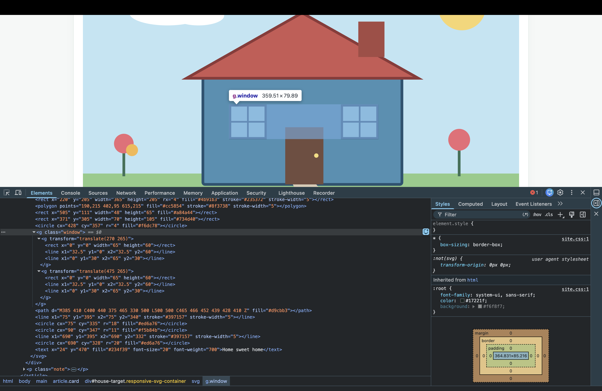

House and garden
The two windows inherit one .window style and use
translate() for their positions.
A house and garden built from SVG primitives. Inspect the image with Developer Tools to see the coordinates, shared window group and transforms.
The two windows inherit one .window style and use
translate() for their positions.
This annotated image starts with a browser screenshot of the SVG and marks the coordinates of each primitive.

This browser screenshot shows the house as rendered and its SVG elements in Developer
Tools. The highlighted g.window group contains two window groups. Each uses
the same rectangle and lines, while translate() places it at a different
position.
